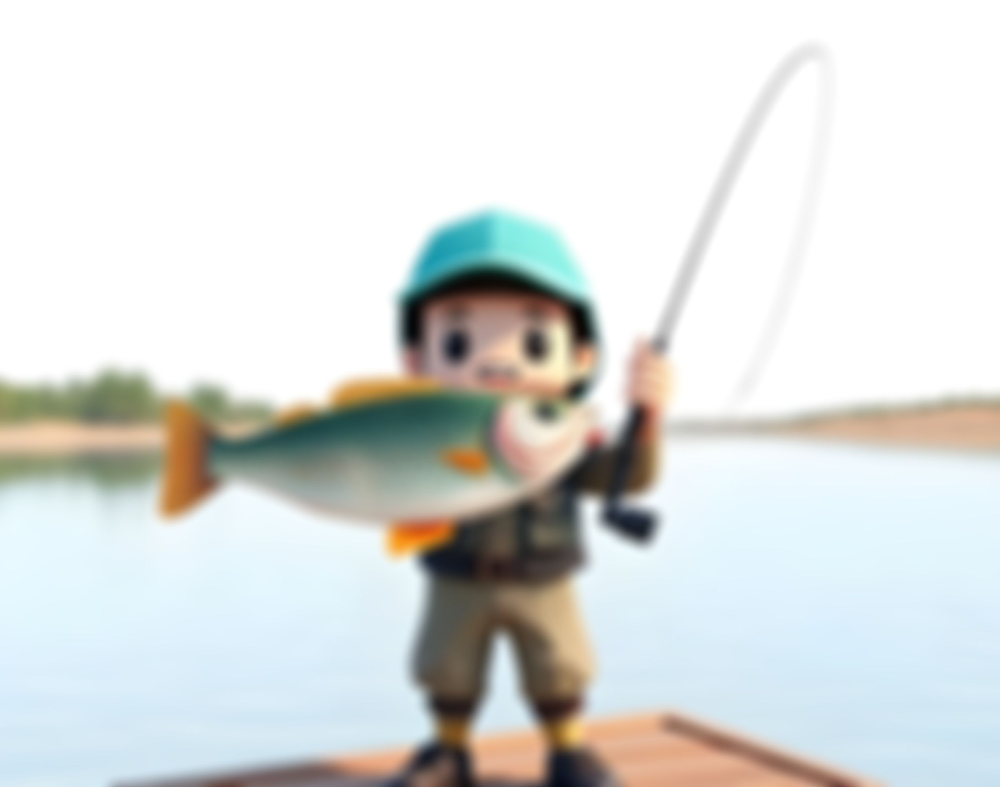

ABOUT
I have been in the software development industry since 2014. Holding positions from Change Management Representative to Java Engineer at multiple Fortune 500 and 100 companies. Programming is pretty much all I do, reach out to me and maybe I can do it for you!